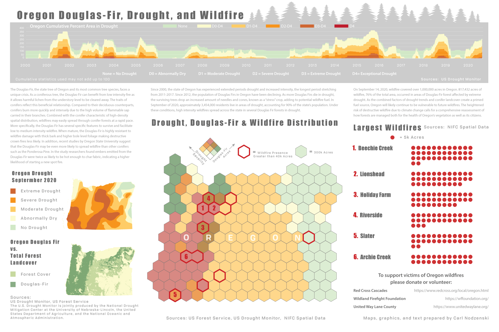
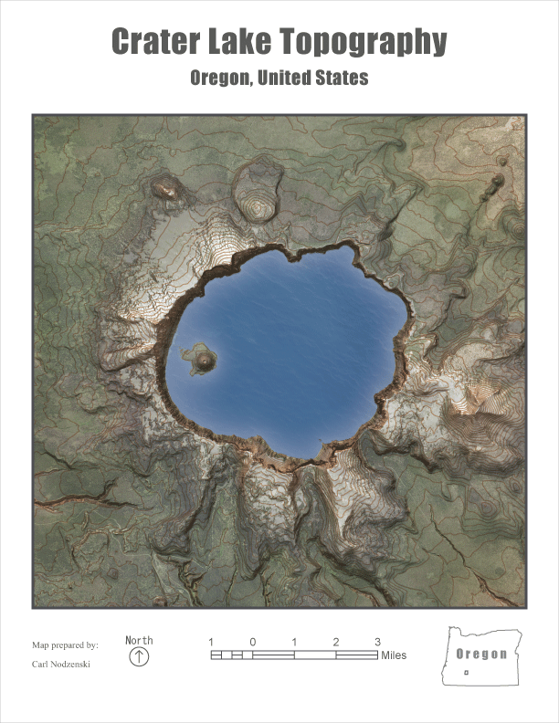
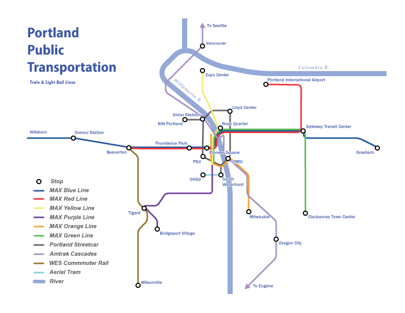
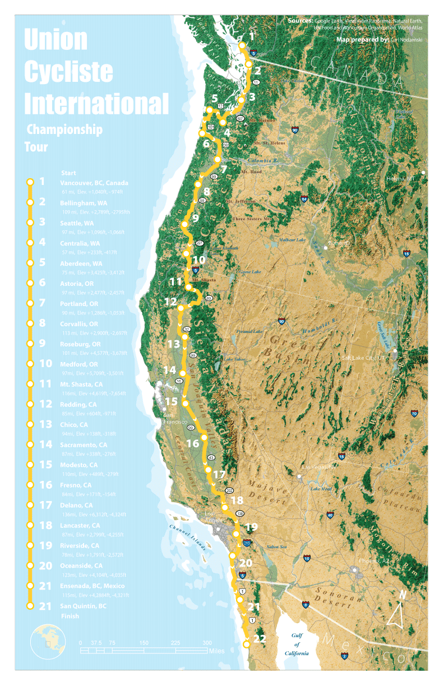

Resume
Portfolio
About
Home
Cartography

Oregon Wildfires and Douglas Fir Distribution
Rose City Bluffs Vector
Rose City Bluffs Aerial Imagery

Crater Lake
San Juan Islands

Portland Transit Tubes

Pacific Coast Cycling Route